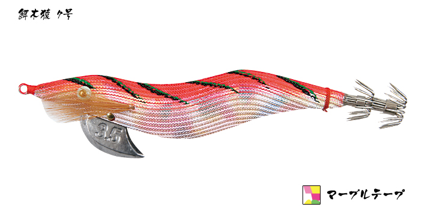
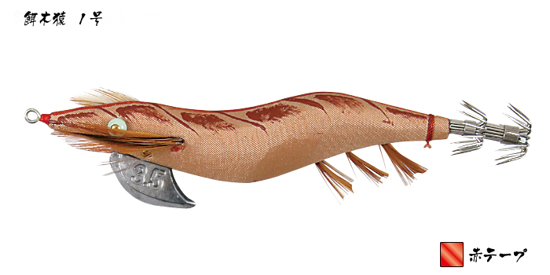
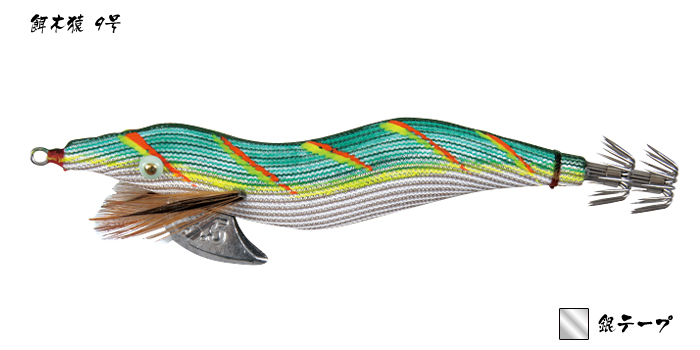
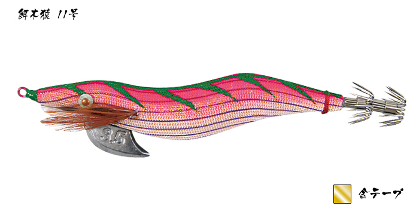

餌木猿
餌木猿（エギザル）は、高知県の老舗、林釣漁具製作所の木製エギです。
天然の桐を使い、職人が一つずつ手作りしています。水になじむ木のボディで姿勢が安定し、シンプルに大きくシャクってフォールさせるだけでアオリイカが抱いてくるのが最大の魅力です。

画像出典:林釣漁具製作所公式HP
スペック
- メーカー
- 林釣漁具製作所（HAYASHI）
- タイプ
- 木製エギ（ノーマル）
- 素材
- 天然の桐（職人の手作り）
- サイズ
- 3.5号
- カラー
- 全23種（柄×下地テープの組み合わせ）
- ターゲット
- アオリイカ
- 価格
- 2,310円（税込）
▼今すぐチェック
餌木猿の特徴
桐の木と職人の手作りから生まれる、潮になじむ木製エギ
-
天然の桐を使った木製ボディ
一般的なエギは中が空洞の樹脂製ですが、餌木猿は中身の詰まった天然の桐でできている。水になじみやすく、フォールや水中での姿勢がよく安定する。風が強い日や潮が当たる日など、釣りにくい状況でも姿勢を崩しにくい。
-
職人が一つずつ手作り
職人の手で一つずつ作られていて、天然素材ならではの個体差がある。木の性質で動きに少しずつ違いが出るので、手になじむ「当たり」の1本を見つける楽しみもある。
-
シャクってフォールさせるだけのシンプルな使い方
大きくシャクってフリーフォールさせる、基本の動かし方でしっかり釣れる。激しいダートで誘うより、糸フケを出して大きくゆったり動かす使い方と相性がよい。
餌木猿の使い方
キャストして底を取ったら、2〜3回大きくシャクって、フリーフォールで落とすのが基本です。
木のボディが水になじんで、フォールの姿勢が安定します。激しく動かすより、糸フケを出してゆったり大きく動かし、フォールでしっかり見せるのがコツ。フォール中のラインの動きでアタリを取りましょう。
餌木猿の得意な状況
秋の新子から春の親イカまで、アオリイカを狙うエギング全般で使えます。
風が強い日や潮が速い日など、樹脂製のエギでは姿勢が安定しにくい場面でも、木のボディが潮になじんで、渋い日でも釣れるのが強みです。
スレたイカが多い釣り場で、いつもと違う「木のエギ」の動きを見せたい時にも出番です。
ワンポイント
天然素材の手作りなので、1つずつ動きに個性があります。よく釣れた1本は「当たり」として大事に使い続けるのがおすすめです。使ったあとは真水で洗ってよく乾かすと、木のボディが長持ちします。
人気カラー
餌木猿の人気カラーを紹介します。カラーは「柄の番号」と「下地テープ」の組み合わせで選びます。

7号 マーブルテープピンク系の柄にマーブルの下地。迷った時の定番の組み合わせ。

1号 赤テープ赤テープの下地。曇りの日や朝夕のマズメに。

9号 銀テープ銀テープの下地で、晴れて水が澄んだ日の日中に。

11号 金テープ金テープの下地で、濁りの入った日や朝マズメに。
画像出典:林釣漁具製作所公式HP
▼今すぐチェック
餌木猿に似ているルアー
-
 エギ王K 3.5 トラディショナルエディション
ヤマシタ
詳細はこちら＞
エギ王K 3.5 トラディショナルエディション
ヤマシタ
詳細はこちら＞
エギ王の25周年記念モデル。伝統的な見た目の樹脂製エギで、価格を抑えたい時に。
-
 アオリーQ 大分布巻
YO-ZURI
詳細はこちら＞
アオリーQ 大分布巻
YO-ZURI
詳細はこちら＞
布巻きの復刻エギ。昔ながらのエギの雰囲気を楽しみたい時に。
-
 エギ王K
ヤマシタ
詳細はこちら＞
エギ王K
ヤマシタ
詳細はこちら＞
定番の樹脂製エギ。カラーやサイズが豊富で、状況に合わせてそろえやすい。